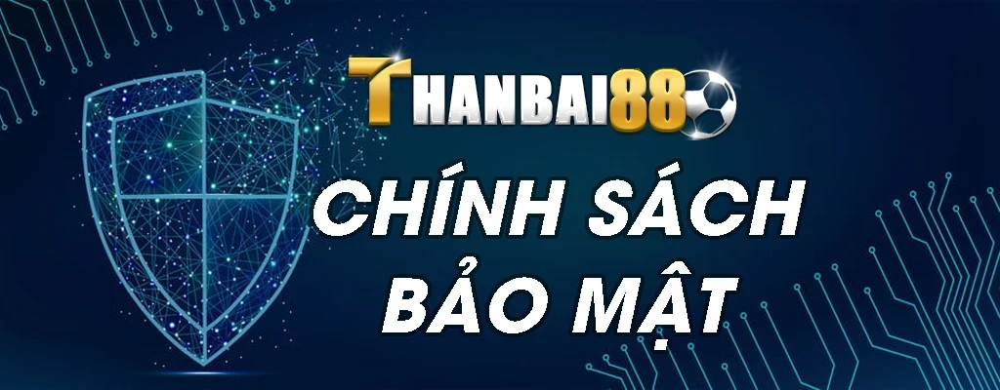

Chính sách bảo mật thông tin người dùng uy tín của nhà cái Thanbai88
Thanbai88 là một trong những nhà cái uy tín hàng đầu Việt Nam với hơn 10 năm kinh nghiệm trong lĩnh vực cá cược trực tuyến. Với sứ mệnh mang đến cho khách hàng những trải nghiệm cá cược an toàn và thú vị, nhà cái luôn đặt sự bảo mật và an toàn của thông tin khách hàng lên hàng đầu.

Thanbai88 cam kết bảo mật tuyệt đối thông tin cá nhân khách hàng 24/7
Thanbai88 cam kết không bao giờ chia sẻ hay buôn bán thông tin cá nhân của khách hàng cho bất kỳ bên thứ ba nào mà không có sự cho phép của họ. Đội ngũ chăm sóc khách hàng của Thanbai88 luôn tuân thủ nghiêm ngặt các quy định về bảo mật, giữ kín mọi thông tin cá nhân của khách hàng như họ tên, địa chỉ, số điện thoại, thông tin tài khoản ngân hàng,…
Các chuyên gia công nghệ thông tin của Thanbai88 cũng áp dụng các công nghệ bảo mật tiên tiến để bảo vệ dữ liệu và ngăn chặn mọi nguy cơ xâm phạm dữ liệu. Thanbai88 cũng thường xuyên cập nhật các chính sách và quy trình bảo mật để đáp ứng các tiêu chuẩn cao nhất của ngành.
Với cam kết bảo mật thông tin khách hàng 24/7, Thanbai88 xứng đáng là sự lựa chọn đáng tin cậy của hàng triệu khách hàng đam mê cá cược trực tuyến tại Việt Nam. Sự bảo mật và an toàn là yếu tố then chốt để Thanbai88 có thể chinh phục và giữ chân khách hàng trong thời đại công nghệ số.
Hệ thống mã hóa dữ liệu tiên tiến nhất tại Thanbai88 đảm bảo bảo mật tối đa
Để bảo vệ tối đa thông tin cá nhân của khách hàng, Thanbai88 đã đầu tư hệ thống mã hóa dữ liệu tiên tiến bậc nhất. Các công nghệ mã hóa được áp dụng bao gồm:
Mã hóa SSL 128 bit: Thanbai88 sử dụng giao thức SSL 128 bit để bảo mật tất cả các giao dịch và kết nối giữa máy khách và máy chủ. SSL mã hóa dữ liệu truyền tải để ngăn chặn bên thứ ba đọc hoặc sửa đổi thông tin.
Mã hóa dữ liệu MD5: Thuật toán mã hóa MD5 được dùng để băm và mã hóa mật khẩu của khách hàng. MD5 biến mật khẩu thành một chuỗi ký tự ngẫu nhiên không thể đảo ngược được. Điều này ngăn chặn việc đoán mật khẩu từ cơ sở dữ liệu.
Mã hóa vân tay thiết bị: Thanbai88 dùng công nghệ mã hóa vân tay thiết bị di động để xác thực khách hàng. Vân tay thiết bị là duy nhất và không thể giả mạo.
Mã hóa dữ liệu đa lớp: Dữ liệu nhạy cảm của khách hàng được Thanbai88 mã hóa đa lớp với nhiều thuật toán khác nhau để tăng độ bảo mật. Kẻ xấu phải vượt qua nhiều lớp mã hóa mới có thể tiếp cận được dữ liệu gốc.
Với hệ thống mã hóa đa dạng và phức tạp trên, Thanbai88 đã tạo nên một “pháo đài” bảo mật vững chắc để bảo vệ tuyệt đối dữ liệu và quyền riêng tư của khách hàng. Khách hàng có thể hoàn toàn yên tâm khi cung cấp thông tin cho Thanbai88.
Quy trình bảo mật thông tin người chơi chặt chẽ và hiện đại tại nhà cái Thanbai88
Không chỉ đầu tư về công nghệ, Thanbai88 còn xây dựng quy trình bảo mật thông tin người chơi chặt chẽ và hiện đại, bao gồm các bước:
Thanbai88 thu thập và lưu trữ thông tin cá nhân khách hàng như thế nào
Chỉ thu thập thông tin cần thiết: Thanbai88 chỉ yêu cầu khách hàng cung cấp những thông tin cá nhân cần thiết như họ tên, số điện thoại, email, địa chỉ,… nhằm phục vụ việc xác minh và liên hệ.
Thu thập thông tin một cách minh bạch: Thanbai88 thông báo rõ ràng với khách hàng về những thông tin sẽ được thu thập và mục đích sử dụng của chúng.
Giới hạn quyền truy cập: Chỉ những nhân viên được ủy quyền mới có thể tiếp cận dữ liệu khách hàng. Mọi hoạt động truy cập đều được ghi lại lịch sử.
Công nghệ mã hóa tiên tiến của Thanbai88 bảo vệ dữ liệu khách hàng
Sau khi thu thập, Thanbai88 áp dụng các công nghệ mã hóa tiên tiến như đã trình bày ở trên để bảo vệ dữ liệu khách hàng. Việc mã hóa diễn ra ở cả trên máy chủ lưu trữ và đường truyền internet.
Hệ thống lưu trữ dữ liệu đa lớp đảm bảo an toàn thông tin tuyệt đối
Thanbai88 lưu trữ dữ liệu khách hàng trên hệ thống đa lớp với các biện pháp bảo mật:
Máy chủ vật lý được bảo vệ trong các trung tâm dữ liệu có tường rào, bảo vệ 24/7.
Dữ liệu được sao lưu định kỳ và lưu trữ tại các địa điểm khác nhau để phòng trường hợp thảm họa ở một nơi.
Thanbai88 sử dụng các giải pháp điện toán đám mây để lưu trữ dữ liệu trên nhiều máy chủ ảo khác nhau. Điều này ngăn chặn việc mất dữ liệu nếu một máy chủ gặp sự cố.
Với các lớp bảo mật đa dạng trên cả phần cứng lẫn điện toán đám mây, Thanbai88 đảm bảo an toàn thông tin tuyệt đối cho khách hàng.
Quyền lợi và trách nhiệm của người chơi trong chính sách bảo mật Thanbai88
Ngoài những nỗ lực từ phía nhà cái, Thanbai88 cũng đề cao vai trò của khách hàng trong việc bảo mật thông tin. Chính sách bảo mật của Thanbai88 quy định rõ các quyền lợi và trách nhiệm của khách hàng như sau:
Những quyền lợi của khách hàng trong chính sách bảo mật của Thanbai88
Quyền được thông báo về những thông tin sẽ thu thập và cách thức sử dụng.
Quyền truy cập, cập nhật, điều chỉnh và xóa thông tin cá nhân khi có yêu cầu.
Quyền được thông báo khi có sự cố xâm phạm dữ liệu cá nhân.
Quyền được bồi thường thiệt hại nếu nhà cái để lộ thông tin cá nhân.
Trách nhiệm của người chơi trong việc bảo mật thông tin tại Thanbai88
Cung cấp thông tin chính xác khi đăng ký tài khoản.
Không tiết lộ thông tin tài khoản cho bên thứ ba.
Thường xuyên thay đổi mật khẩu và đặt mật khẩu phức tạp.
Không truy cập tài khoản từ các thiết bị công cộng.
Thông báo kịp thời cho nhà cái khi phát hiện có dấu hiệu mất an toàn thông tin.
Thời hạn và hiệu lực của chính sách bảo mật thông tin tại Thanbai88
Để đảm bảo luôn cập nhật các biện pháp bảo mật tốt nhất, Thanbai88 có những quy định rõ ràng về thời hạn và hiệu lực của chính sách bảo mật:
Thanbai88 cập nhật chính sách bảo mật mới nhất cho khách hàng
Chính sách bảo mật của Thanbai88 được xem xét và cập nhật ít nhất 6 tháng một lần để áp dụng các công nghệ và quy trình bảo mật mới. Những thay đổi chính sẽ được thông báo tới khách hàng trong thời gian sớm nhất.
Hiệu lực của chính sách bảo mật Thanbai88
Chính sách bảo mật của Thanbai88 có hiệu lực kể từ thời điểm ban hành cho đến khi có chính sách mới thay thế.
Khi Thanbai88 ban hành chính sách bảo mật mới, phiên bản cũ sẽ chính thức hết hiệu lực.
Tất cả khách hàng của Thanbai88 phải tuân thủ theo chính sách bảo mật mới nhất để tiếp tục sử dụng dịch vụ.
Thanbai88 có trách nhiệm thông báo và hướng dẫn khách hàng về các điều khoản trong chính sách bảo mật mới.
Cam kết bảo mật thông tin khách hàng của nhà cái Thanbai88
Với hơn 10 năm hoạt động trong lĩnh vực cá cược trực tuyến, Thanbai88 không ngừng nỗ lực hoàn thiện hệ thống bảo mật để bảo vệ thông tin và quyền riêng tư của khách hàng.
Thanbai88 cam kết luôn cập nhật các công nghệ bảo mật tiên tiến để đối phó với các nguy cơ mới. Chính sách bảo mật của Thanbai88 cũng sẽ liên tục được rà soát và bổ sung nhằm tuân thủ luật pháp cũng như nâng cao trải nghiệm bảo mật cho khách hàng.
Sự bảo mật và an toàn của thông tin khách hàng chính là nền tảng để Thanbai88 xây dựng lòng tin và sự trung thành của khách hàng. Thanbai88 sẽ không ngừng nỗ lực để trở thành nhà cái uy tín số 1 về bảo mật thông tin người chơi tại Việt Nam.